基于GIS与RS的长春市城区宜居性评价
根据宜居城市的发展目标，在参考前人对长春所做的依据性评价基础上，以夜光灯数据获取的人口数据代替年鉴数据，并增设了雾霾指标，基于GIS与遥感手段对自然与人文两方面共计20个指标进行分析 (下表)，最后利用主成分分析法与均方差法对长春市城区的宜居性进行评价。
| 目标层 | 准则层 | 因素层 | 指标层 |
| 长春市宜居度 | 自然环境因子 | 生态环境 | 地形起伏度 |
| 温湿指数 | |||
| 水文指数 | |||
| 人文环境因子 | 便利性 | 公交站点的便利性 | |
| 火车站点的便利性 | |||
| 汽车站点的便利性 | |||
| 超市便利性 | |||
| 轻轨站点的便利性 | |||
| 学校便利性 | |||
| 医院便利性 | |||
| 餐饮酒店便利性 | |||
| 舒适性 | 植被覆盖度 | ||
| 公园可达性 | |||
| 文化设施可达性 | |||
| 健康性 | 远离工业污染的健康性 | ||
| 远离生活污染的健康性 | |||
| 远离交通噪声的健康性 | |||
| 远离雾霾的健康性 | |||
| 安全性 | 人口密度 | ||
| 交通安全 | |||
| 潜在危险 |
1数据和方法
1.1自然环境条件评价分析
1.1.1地形因子
根据封志明等提出的地形起伏度的计算模型：
RDLS=ALT/1000+{[Max（H）-Min（H）]*[1-P（A）/A]}/500
式中：RDLS为地形起伏度；Max（H）和Min（H）分别为最佳窗口内的最高与最低海拔（m）；P（A）为最佳窗口内的平地面积（km2）；A为最佳窗口总面积。本研究将坡度值小于5°的区域定位平地。长春市地形起伏度如下图
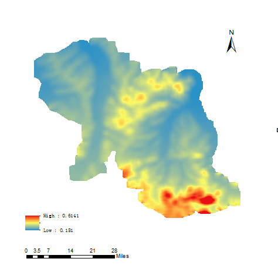1.1.2气候因子
本文通过温湿指数（THI，TemperatureHumidityIndex）来衡量人居环境的气候因子，考虑了人体舒适度中温度和湿度的综合影响。 根据公式：
THI=T-0.55(1-f)(T-58)
T=1.8t=32
式中THI为温湿指数，f为年平均空气相对湿度（%），T为年平均华氏温度（°F），t为年平均摄氏温度。（长春市温湿指数如下图）
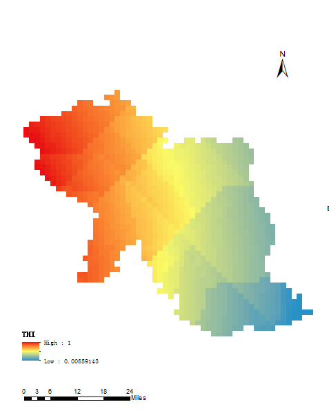1.1.3水文因子
城市的水文条件受降水量、蒸发量、径流量、水位、水温、水质等多因素影响。本文通过水文指数来反映长春市的水文条件，其中水温指数采用降水量和水域面积的比重来表示，公式如下
WRI=αP+βWa
式中WRI为水文指数：P为归一化的降水量；Wa为归一化水域面积，α和β分别为年平均降水与水域比例的权重，文中α取值0.8，β取值0.2。）(下图)
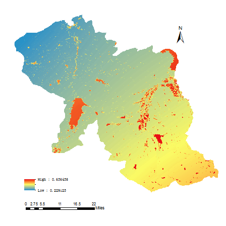1.2人文环境条件评价分析
1.2.1便利性
（1）数据来源
通过爬取长春市公交站点、火车站点、客车站点和轻轨站点的经纬度作为出行便利性的指标；超市、学校、医院和餐饮酒店的经纬度作为日常生活便利性的指标。
（2）处理方法
对爬取数据通过投影转换后进行欧氏距离分析，得到包含该要素的栅格图层，根据实际情况，对欧氏距离结果珊格分别采取正向归一化与反向归一化的方法得到从0-1向宜居性趋势变化的宜居性栅格分布。便利度分值按下式计算：
S_conv=(MAX(Dij)-Dij)/(MAX(Dij)-MIN(Dij))
其中，Sconv分别为至公交站点、火车站、客运站及轻轨站的便利度分值，Dij为距上述目标的欧几里得（Euclidean）距离值。便利度分值越高，出行也相对便利。
1.2.2舒适性
1.2.2.1植被覆盖度
本文采用归一化植被指数（NDVI）像元二分法估算模型进行研究区植被覆盖度的计算，公式如下：
f_C=(NDVI-[NDVI]_s)/([NDVI]_v-[NDVI]_s )
NDVI=(NIR-R)/(NIR+R)
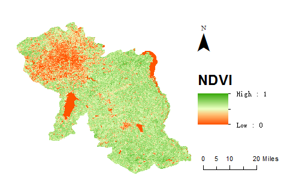其中f_C表示植被覆盖度，NIR和R分别为影响的近红外波段和可见光的红波段的反射率。将计算得到的NDVI>0的结果提取即为植被信息。[NDVI]_s为无植被像元的NDVI值，[NDVI]_v代表完全由植被所覆盖的像元的NDVI。根据研究区实际NDVI值，分别取[NDVI]_s与[NDVI]_v的值为0.1和0.9。根据公式计算得到长春植被覆盖度分布图（如左图）。
1.2.2.2公园广场的可达度分析
公园和广场的可达性分析能够体现出空间一点到特定公园或广场的难易程度，除了与公园的规模，至公园的直线距离有关以外，与享受公园这一资源的人口数量也有关系，因此，本文在空间可达性问题研究中改进的引力模型，按公式
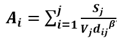计算公园、广场的可达度。其中Ai为夜光数据提取的人口点至公园或广场的可达性指标值；dij为人口点至公园、广场的直线距离；β为阻抗系数，根据文献，取值为1；Vj为某公园的人口势能，按公式
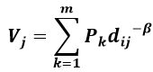计算，Pk为某居民点的人口数量。(下图)
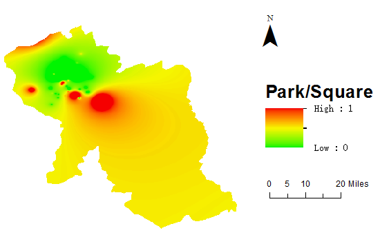1.2.2.3文化设施舒适性
将文化设施的点图层输入欧氏距离工具得到距离栅格图。（下图）
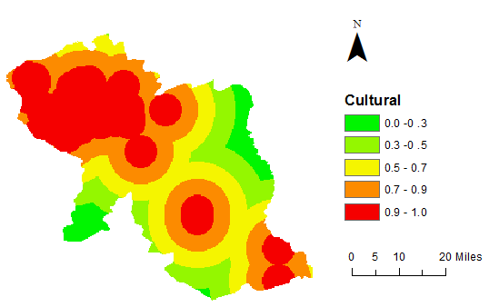1.2.3健康性
1.2.3.1空气清洁度
将气象数据使用克里金插值法后，反向极值标准化，得到长春市的空气质量图，值越高，空气质量越好，污染越低。
1.2.3.2环境噪音
城市环境噪声主要来源于交通噪声，生产噪声，建筑噪声及生活噪声四个方面。环境噪音污染主要通过铁路线，有轨车道，主干路产生的交通噪声污染及由工厂生产，家居建材商场，大型批发市场附近的仓储物流运输等引起的生活噪声污染反映。按如下公式计算。S_health为某居民点的健康性指数得分，D_ij为到污染源的欧几里得距离，距离越大，健康性指标越高，地区环境就越健康。
S_health=(D_ij-MIN(D_ij))/(MAX(D_ij )-MIN(D_ij))
1.2.3.3水的清洁度
将化工厂、制药厂、加油站、液化气站输入欧氏距离工具得到距离栅格图。(如下图)
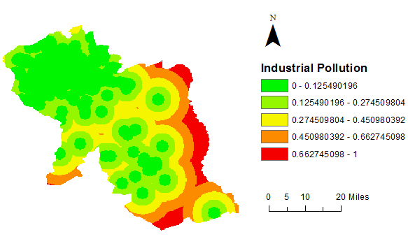1.2.4安全性
1.2.4.1基于DMSP-OLS夜光遥感数据模拟的空间人口分布
首先根据2015年长春的监督分类图确定人能够居住的建成区域，对建成区范围内的灯光数据按照长春的6个区计算灯光总强度；通过回归分析得出各区灯光总强度与人口的相关函数，根据函数关系得到空间化的人口数据。
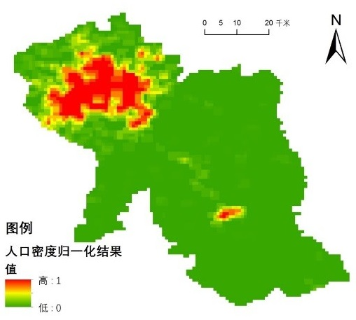1.2.4.2主干路密度和潜在安全
通过居民区和上述区域的欧几里得距离按公式计算潜在安全性分值，分值越大，潜在安全性越优。
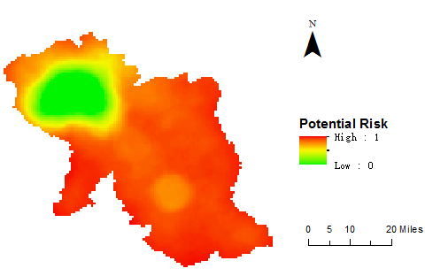2结果分析
最终采用均方差法通过自然环境与人文环境两个变量的均方差反映变量的离散程度，计算宜居性综合得分。
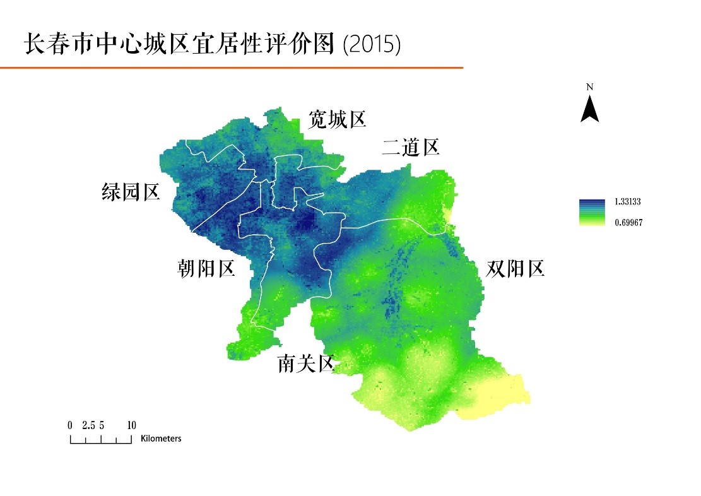由图中看出研究区宜居性综合得分最大值为1.3313，最小值为0.6997，平均分值为 1.067，宜居度高于平均地区的地区占研究区总面积的50.25%，整体宜居性水平中度适宜；宜居性较好的区域主要分布于南关区外围与绿园区、宽城、净月过渡的地区；在绿源朝阳相交地区得分较高，在净月潭附近分值最高，明显高于周边旧城区；而旧城区与长春市中心相交的部分得分又高于城市外围；南关区南部的旧城区得分较低，交通、各类设施及公园等可达性较差，在双阳区呈现有西北向东南分值递减的趋势，在双阳区东南角宜居性最差。在双阳河附近也出现了宜居度较高的地区；总体来说长春宜居性较高的地区除较为典型的市中心与大型公园附近外，宜居性较高区域基本延分区界限延展分布在市中心外城区交界处宜居性较高。